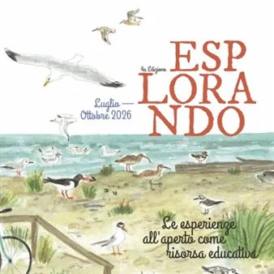

da mer 12 ago a sab 3 ott
Esplorando
Esplorando è una rassegna di incontri per bambini e adulti insieme, per condividere il piacere di stare all’aperto e scoprire infinite possibilità di gioco, scoperta e apprendimento. Quest’anno il programma si sdoppia: gli incontri di Esplorando sono pensati per bambine e…
 Indicazioni
Indicazioni
- Costi e prenotazioni
- Costo non indicato · Prenotazione non indicata
- Programma
- Programma da verificare. Apri la fonte ufficiale per orari e possibili aggiornamenti.
- In caso di maltempo
- Nessuna indicazione specifica pubblicata.
- Note
- Acquisito automaticamente dalla fonte.
L’EVENTO
Descrizione completa
Esplorando è una rassegna di incontri per bambini e adulti insieme, per condividere il piacere di stare all’aperto e scoprire infinite possibilità di gioco, scoperta e apprendimento.
Quest’anno il programma si sdoppia:
gli incontri di Esplorando sono pensati per bambine e bambini dai 6 ai 10 anni
mentre Esplorando Mini è pensato appositamente per i più piccoli, dai 2 ai 5 anni
In calendario a Gorizia:
mercoledì 12 agosto
dalle ore 10.0 alle ore 12.00
Esplorando mini
Attività riservata al centro estivo Comunale
sabato 3 ottobre
Parco Piuma Isonzo
dalle ore 10.30 alle ore 12.30
All’aperto tra letture ed esplorazioni
Attività gratuita per famiglie con bambini dai 6 ai 10 anni
Al termine, per chi desidera: merenda portata da casa
Info e prenotazioni: Tel. 0481 383621, educativi@comume.gorizia.it
In caso di pioggia l’evento sarà proposto al Centro Lenassi
Programma completo QUI
IL PROGRAMMA
Programma e orari
Appuntamenti raccolti dalle fonti elencate. Dove manca un orario, non è ancora disponibile in questa scheda.
Programma pubblicato
- Dal 2026-08-12 al 2026-10-03
INFORMAZIONI UTILI
Prima di partire
- Controllare la fonte prima di partire.
ORGANIZZAZIONE